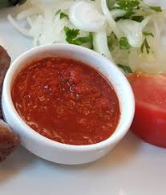

Köfte Sosu Tarifi
Malzemeler:
- 2 yemek kaşığı domates salçası
- 2 yemek kaşığı biber salçası
- 1 çay bardağı zeytinyağı
- 2 diş sarımsak
- 1 adet domates (rendelenmiş)
- 1 çay kaşığı karabiber
- 1 çay kaşığı pul biber
- 1 çay kaşığı toz kırmızı biber
- 2 çay kaşığı kekik
- 2 çay kaşığı tuz
Yapılışı:
1. Zeytinyağını bir tavada ısıtın ve sarımsakları doğrayıp ekleyin.
2. Domates ve biber salçasını ilave edin ve karıştırarak birkaç dakika pişirin.
3. Rendelenmiş domatesi ekleyin, baharatları da katıp karıştırın.
4. Karışım kaynadığında sos hazır olacaktır. Afiyet olsun!